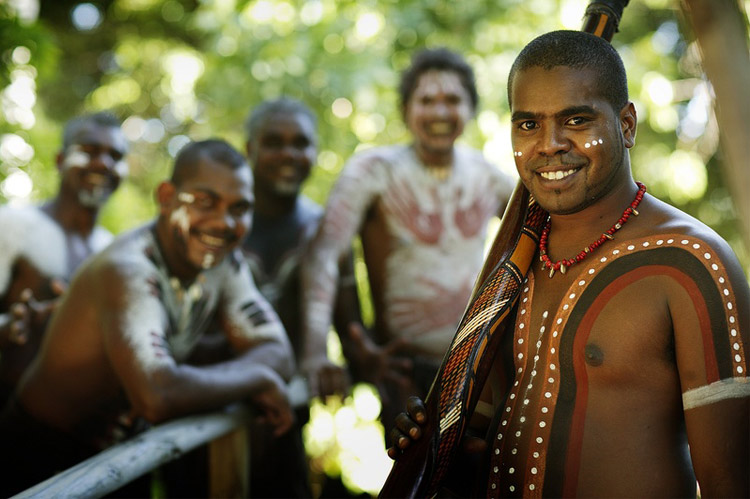
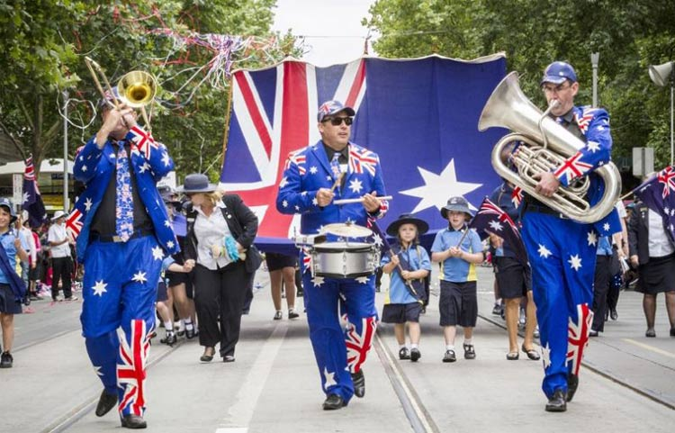

大堡礁，地广人稀，袋鼠，海洋，沙滩，雨林，自然，历史，割舍不了的英国记忆，这些都是澳大利亚的标签。除此之外，这个美丽的国家还有一点其他国家怎么都比不上的优势——独自占据一整块大陆（那是因为你们大陆太小啊喂）！
这个孤独的立在太平洋与印度洋之间的陆地，独特的气候、地形造就了其别具特色的环境，因而成为了许多人旅游的首选。菲尔半岛是潜伏者、冲浪者天堂，有着壮丽的海岸线和备受人们喜爱的海滩，还有神秘的沉船遗骸和迷人的野生海洋生物。芭萝莎是澳大利亚最著名、最重要的葡萄酒产区之一，这里有着优美的乡村景致，到处错落的酒庄和蜿蜒的葡萄藤……
澳大利亚一词原意是“南方的大陆”，来自拉丁文terraaustralis（南方的土地）。早在4万多年前，土著居民便生息繁衍于澳大利亚这块土地上。
1606年，西班牙航海家托勒斯的船只驶过位于澳大利亚和新几内亚岛之间的海峡。同年荷兰人威廉姆·简士的杜伊夫根号涉足过澳大利亚，这是首次有记载的外来人在澳大利亚的真正登陆，他将此地命名为“新荷兰”。1770年，英国航海家库克船长发现澳大利亚东海岸，将其命名为“新南威尔士”，同时宣布这片土地属于英国。
1788年1月18日，亚瑟·菲力浦率“第一舰队”的11只小船驶抵悉尼市的杰克森港下锚。这些船只载着780名放逐犯人、海军及其家属约1200人。八天后的1月26日，他们正式在澳大利亚杰克逊港建立起第一个英国殖民区，菲力浦成了首任总督。而从此1月26日成为了澳大利亚建国纪念日，被人们称作“澳大利亚日”。
在随后的80年间，总共有15.9万英国犯人被流放澳大利亚，所以这个国家也被戏称为“囚犯创造的国家”。而今，每年1月26日这天，澳大利亚各大城市都会举行各种大型的庆祝活动，因为这是他们最重要的节日。
节日活动之一是入籍仪式：成千上万澳大利亚联邦的新公民集体宣誓：“从现在起，以上帝的名义，我宣誓：我将忠实于澳大利亚和她的人民，分享他们的民主信仰，尊重他们的权利和自由，维护并遵守澳大利亚法律。”自1949年1月26日至今，已有约300万人以这样的方式宣告自己成为澳大利亚公民。
1、每年的1月26日是澳大利亚的国庆日，这天澳大利亚会举行各种庆祝活动；
2、虽然历史上澳大利亚是一个流放囚犯的地方，但现在这个国家是非常文明的，旅游请放心自己的安全！